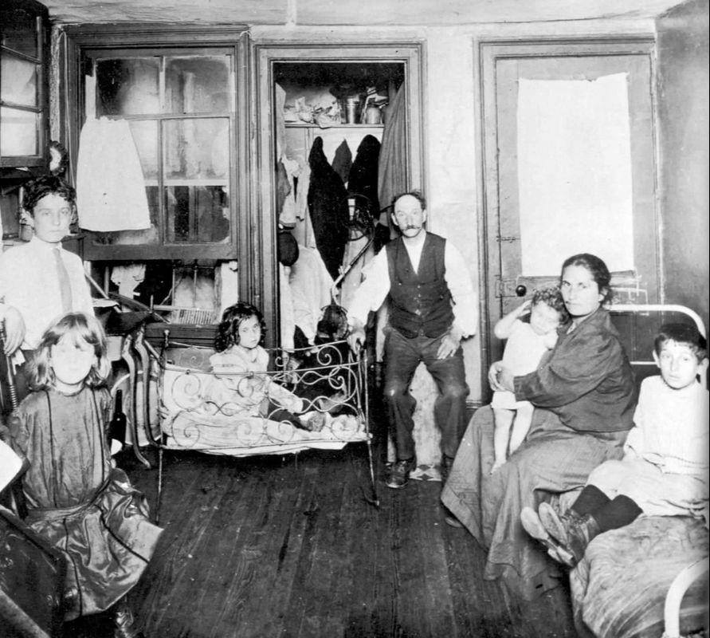
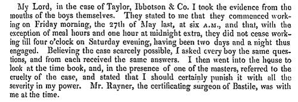
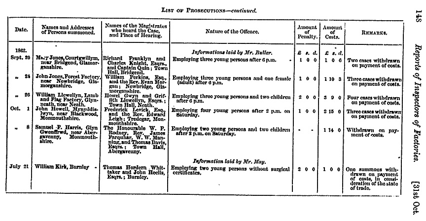

The Industrial Revolution started around 1780. Before the Industrial Revolution, people lived in homes which contained spacious living conditions.
Before the Industrial Revolution, People did not have to mass produce items. People only made what they needed. I.E, When they needed new clothing, They would make only what they need.
We can summarise the life of someone before the Industrial Revolution, as a Farmers Life. The men worked the land, and relied in their wives community to provide everything else.
After the Industrial Revolution began, Men and Women started to move to the City, from the country. This meant that the living conditions had changed.
Their living conditions changed from Clean and spacious, to Dirty, and Cramped.
The working conditions had also changed from the Free farms to cramped, dangerous, and dirty factories. The conditions where so bad, that in 1933, a factory reform was put into place.
The reason we can describe the conditions as horrendous, is due to what was said in the document of which you can see below. The boys were working for 2 days straight, with time for only one break.
We can then see another document which contains names of companies which where prosecuted because of making children work unfairly.
Some of the offences which where committed, where minor things like keeping a child working after 6PM, and after 2PM. Although, One major offence, Was employing a child without surgical certificates.
Below, There is a selection of videos that show the appalling conditions. I hope this video sheds some light on the bad conditions people, kids especially, had to work in.
As these videos show, Working conditions where horrible for kids. Some of the working conditions these kids where put through, where jobs like "trappers". Being a trapper entailed being down in dark mines,
In the dark mines, the children had to hold doors open for the minecarts, and would normally have rats and mice scurrying around them, and if they complained, the miners would beat them.